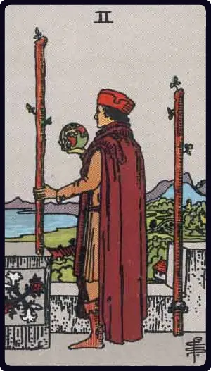

Card Grimoire
II of Wands
Polarity
Masculine
Yes/No
Yes
Suit
Wands
Also called
Two of Wands, 2 of Wands
Materials1
Reversed Correspondences6
Symbols1
Upright Correspondences9
| Upright General | Upright Money | Upright Employment | Upright Love | Upright Health |
|---|---|---|---|---|
| You're beginning to assert yourself, taking charge of an endeavor. The Two shows you waiting to see results in a venture. You feel confident of your success. You may accept advice or assistance from someone else, but you won't compromise your position or leadership. | In a reading about money, this card indicates you may benefit from other people's guidance, ideas, and encouragement but want to make it on your own, rather than depending on others. | In a reading about work, the Two shows you investing lots of energy in an endeavor. Take charge and don't let other people stand in your way, dissuade you, or diminish your enthusiasm. | In a reading about love, the Two upright suggests you're building a rewarding partnership. Sometimes it represents a creative relationship in which two people inspire and encourage each other. | |
| Confidence in personal success builds here, alongside a readiness to step further out into the world while still keeping backup plans in place. Guidance or assistance from others may be accepted without giving up personal leadership or position. A short pause to handle small details now tends to pay off later. | Guidance, ideas, and encouragement from others can be genuinely useful here, even while preferring to build financial independence through personal effort rather than relying on others. | Real energy and investment go into a current endeavor here, and staying the course matters even when other people try to discourage or diminish that enthusiasm. | Building a rewarding partnership takes real shape under this card, sometimes through a creative connection where two people inspire and encourage each other forward. | Clear, achievable goals for physical and mental wellbeing deserve real attention here, along with genuine openness toward new health strategies or approaches not previously considered. Taking a proactive stance matters more than the specific method chosen. |
| Reversed General | Reversed Money | Reversed Employment | Reversed Love | Reversed Health |
|---|---|---|---|---|
| When the Two of Wands is reversed, it can indicate a delay or difficulty. You may be in for a surprise that requires you to make changes. Perhaps someone you relied on or believed in disappoints you. | If you asked about money, this card may mean financing for a project gets delayed, or an investment doesn't produce the return you'd hoped for. Use caution in financial partnerships or contracts. | In a reading about work, the reversed Two can mean you'll have to work harder than you'd expected to bring your dream to fruition. Sometimes it indicates you've gotten off track and need to take action to control a situation. You may have to rein in a colleague or contractor, or another person may not hold up his or her end. | In a reading about love, this card advises being upfront and honest with your partner. If the relationship is rocky, you may have to make adjustments, especially if you've been too dependent or detached in the past. | |
| Fear of making the wrong decision tends to create real stalling or avoidance here, leaving important matters unattended despite genuine urgency. Stepping outside a comfort zone matters more than continuing to watch the world go by without engaging in it. A roadblock caused by insufficient planning calls for a step back and more than one backup plan, since moving forward without any preparation at all rarely works out. | Financing for a project may face delays here, or an investment may fail to produce the return hoped for, making caution in financial partnerships and contracts worthwhile. | More effort than expected may be required to bring a goal to fruition at work under this reversal. Getting off track calls for real action to regain control, whether that means reining in a colleague or contractor, or acknowledging that someone else has not held up their end. | Honesty and directness with a partner serve well here. A rocky relationship may call for real adjustments, particularly around patterns of being too dependent or too detached. | Frustration tends to build here around stalled health progress, since plans have not unfolded as hoped. Patience matters more right now than overhauling an entire strategy, and giving a little more time before switching approaches serves better than starting over completely. |
Imagery and Symbolism
A figure stands atop a balcony or castle balustrade, looking out over a fertile world that stretches toward the horizon. A globe rests in one hand while their gaze reaches toward what lies ahead. Fiery orange and red tones appear in their clothing, echoing enthusiasm and a passion for adventure, while the open composition and forward facing stance bring a sense of optimism about what is still to come.
Affirmation
I plan for success.
Astrology
The Two of Wands carries the astrological pairing of Mars in Aries. Aries's driven energy partners here with Mars's talent for strategizing toward victory, meaning that effort invested under this pairing tends to be rewarded.
Journal Prompts
Upright
- How can success be planned for in the future?
- Where could a little more adventure be added to life?
Reversed
- When procrastination shows up, what actions help shift that feeling?
- Where in life could more direction be useful?